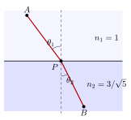
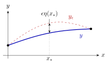
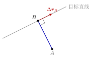
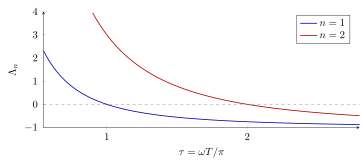
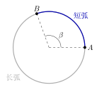
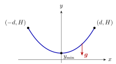
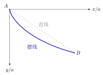
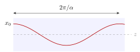

第一章从受力出发逐时刻求运动。对有约束的系统，逐个求反力往往费力；另一种办法是比较满足边界条件的整条路径，用一个标量泛函的驻值条件描述运动。本章建立这种方法的数学基础，第三章再系统应用于力学。
主线为：泛函与容许路径 \(\longrightarrow\) 一阶变分与边界项 \(\longrightarrow\) 欧拉–拉格朗日方程 \(\longrightarrow\) 约束与二阶变分 \(\longrightarrow\) 几何、光学和力学应用。应能独立复现分部积分，区分真实位移与路径变分，判断一个结论只是驻值必要条件，还是已经证明了极小性。
2.1变分思想：从费马原理开始
2.1.1先说清楚比较哪些路径
普通函数 \(f(z)\) 的自变量是数，泛函（functional）的自变量是一整条函数。例如固定两端的曲线 \(y(x)\)，其长度为 \[\mathcal L[y]=\int_a^b\sqrt{1+y'^2}\,\mathrm{d}x.\] 不同曲线给出不同长度，即使它们在端点取相同数值。要问哪一条最短，必须先规定容许路径：定义区间、边界值、光滑性、是否允许自交，以及必须满足的约束。不同的容许集合可能产生不同的答案。
本章先讨论标量图形 \(y=y(x)\)，通常取 \(y\in C^2[a,b]\)，扰动取满足端点条件的光滑函数；被积函数在路径邻域具有所需的连续偏导数。含尖点、无穷斜率或分段介质的问题，要单独说明分段求解和极限步骤。参数化曲线适用于不能由单个 \(y(x)\) 覆盖的情形。
2.1.2费马原理及其适用范围
在静止、各向同性介质的几何光学近似下，设折射率为正函数 \(n(\mathbf{r})\)，局部光速为 \(c/n\)。沿路径的传播时间与光程为 \[T[\gamma]=\frac1c\int_\gamma n(\mathbf{r})\,\mathrm{d}s,\qquad \mathcal L_{\rm opt}[\gamma]=\int_\gamma n\,\mathrm{d}s. \tag{2.1}\] 对固定空间端点的邻近容许路径，费马原理给出 \[\delta T=0\quad\Longleftrightarrow\quad\delta\mathcal L_{\rm opt}=0. \tag{2.2}\] 这里暂把 \(\delta\) 理解为“一阶路径变化”；严格定义将在下一节给出。驻值不预先保证全局最短时间，存在多条光线、焦点或反射约束时尤其如此。
比较路径是理论中的操作，不是光线预先知道终点。在短波长近似中，邻近光学路径的相位由光程决定；远离驻相区域的贡献容易相消。这个图像说明几何光学与波动光学的联系，但不能用一句“自然总在优化”代替对容许路径和适用极限的规定。
2.1.3折射定律：先做一个普通极值问题
例 1.1 (固定两端的平面折射). 界面为 \(y=0\)，\(A=(0,h_1)\)、\(B=(d,-h_2)\)，\(h_1,h_2,d>0\)，两侧均匀折射率为 \(n_1,n_2>0\)。先在各均匀介质中取直线段，令折射点 \(P=(\xi,0)\)，则 \[\mathcal L(\xi)=n_1\sqrt{\xi^2+h_1^2}+n_2\sqrt{(d-\xi)^2+h_2^2}.\] 求导得到 \[\mathcal L'(\xi)=n_1\frac{\xi}{\sqrt{\xi^2+h_1^2}} -n_2\frac{d-\xi}{\sqrt{(d-\xi)^2+h_2^2}}.\] 定义两侧光线与法线的夹角为 \(\theta_1,\theta_2\)，驻值条件为 \[\boxed{n_1\sin\theta_1=n_2\sin\theta_2.}\] 而 \[\mathcal L''(\xi)=\frac{n_1h_1^2}{(\xi^2+h_1^2)^{3/2}} +\frac{n_2h_2^2}{((d-\xi)^2+h_2^2)^{3/2}}>0.\] 因此本例在折射点这一变量上严格凸，驻点确为唯一最小值。并且 \(\mathcal L'(0)<0,\mathcal L'(d)>0\)，可知它在两端垂足之间。\(n_1=n_2\) 时两段接成同一直线，是结果的直接检验。

2.1.4从有限个折射点走向一条未知曲线
若把连续变化的介质切成许多薄层，未知量变成每个界面的折射点；层数趋于无穷时，未知量成为整个函数。最速降线也有相同结构：取 \(y\) 向下、出发点为原点，均匀重力下无摩擦滑动且初速为零，则由第一章能量守恒，\(v=\sqrt{2gy}\)。在 \(y>0\) 的曲线段上， \[T[y]=\int_0^{x_B}\frac{\sqrt{1+y'^2}}{\sqrt{2gy}}\,\mathrm{d}x. \tag{2.3}\] 最短几何长度与最短时间权衡不同。出发点 \(y=0\) 使被积函数奇异，因此不能不加说明地把下面的光滑定理直接用于端点；本章稍后将在内部推导，再检查时间积分的可积性。
2.2泛函、一阶变分与欧拉–拉格朗日方程
2.2.1有限差、变分与时间位移的区别
考虑 \[I[y]=\int_a^b F(x,y,y')\,\mathrm{d}x,\qquad y(a)=y_A,\quad y(b)=y_B. \tag{2.4}\] \(F\) 称为被积函数；这里的 \(x\) 是独立变量，未必是位置，也可以是时间。取一条试探函数 \(y\)，选定扰动形状 \(\eta(a)=\eta(b)=0\)，组成路径族 \[y_\epsilon(x)=y(x)+\epsilon\eta(x).\] \(\epsilon\) 是标记路径的小参数。严格定义一阶变分为对参数的方向导数： \[\delta I[y;\eta]=\left.\frac{\mathrm{d}}{\mathrm{d}\epsilon}I[y_\epsilon]\right|_{\epsilon=0}, \qquad \delta y=\eta,\quad \delta y'=\eta'. \tag{2.5}\] 本章约定 \(\delta y\) 表示单位参数的变分方向，不把 \(\epsilon\) 重复包含其中。因此有限变化满足 \[I[y+\epsilon\eta]-I[y]=\epsilon\delta I[y;\eta] +\tfrac12\epsilon^2\delta^2I[y;\eta]+o(\epsilon^2).\] 驻值意味着对所有容许方向都有 \(\delta I[y;\eta]=0\)；并非要求所有邻近曲线都给出完全相等的泛函值。

2.2.2从链式法则到边界项
对参数 \(\epsilon\) 求导，并在光滑条件下交换微分与积分： \[\delta I=\int_a^b\left(F_y\eta+F_{y'}\eta'\right)\mathrm{d}x.\] 其中各偏导沿未扰动路径 \(y(x)\) 取值。\(y,y'\) 在求偏导时作为独立槽位；之后才代入 \(y'=\mathrm{d}y/\mathrm{d}x\)。关键的一步是分部积分： \[\int_a^b F_{y'}\eta'\mathrm{d}x =[F_{y'}\eta]_a^b-\int_a^b\frac{\mathrm{d}F_{y'}}{\mathrm{d}x}\eta\mathrm{d}x.\] 因此完整的一阶变分为 \[\delta I=[F_{y'}\eta]_a^b+ \int_a^b\left(F_y-\frac{\mathrm{d}F_{y'}}{\mathrm{d}x}\right)\eta\mathrm{d}x. \tag{2.6}\] 先保留边界项，再根据端点条件处理。固定端点给出 \(\eta(a)=\eta(b)=0\)，从而 \[\delta I=\int_a^b\left(F_y-\frac{\mathrm{d}F_{y'}}{\mathrm{d}x}\right)\eta\mathrm{d}x. \tag{2.7}\] 若括号是连续函数且对所有内部光滑紧支扰动积分均为零，变分法基本引理保证括号逐点为零。理由是：若某点处括号为正，则附近仍为正，取支撑在该邻域的非负扰动即可得到正积分，与假设矛盾；负值同理。故驻值路径满足 \[\boxed{F_y-\frac{\mathrm{d}}{\mathrm{d}x}F_{y'}=0.} \tag{2.8}\] 这就是欧拉–拉格朗日（Euler–Lagrange）方程，是内部驻值的必要条件，还须满足原边界条件及任何约束。
例 1.2 (一个可直接检验的驻值函数). 令独立变量与函数值均为无量纲量，求 \[I[y]=\int_0^1(y'^2+2xy)\mathrm{d}x,\qquad y(0)=0,\quad y(1)=1.\] 有 \(F_y=2x,F_{y'}=2y'\)，所以 \(y''=x\)。两次积分得 \(y=x^3/6+C_1x+C_2\)，端点给出 \(C_2=0,C_1=5/6\)。对任意固定端点扰动 \(h\)，精确展开为 \[I[y+h]-I[y]=\int_0^1\bigl[2y'h'+2xh+h'^2\bigr]\mathrm{d}x =\int_0^1h'^2\mathrm{d}x>0\quad(h\ne0).\] 中间用 \(y''=x\) 及 \(h(0)=h(1)=0\) 消去一次项。因此这个驻点还是整个图形容许类中的唯一全局极小，结论比仅解出方程更强。
2.2.3离散化：把路径看成很多个坐标
令 \(h=(b-a)/N\)、\(x_k=a+kh\)，固定 \(y_0,y_N\)，用 \[I_N=\sum_{k=1}^NhF\left(x_k,y_k,\frac{y_k-y_{k-1}}h\right) \tag{2.9}\] 近似积分。内部 \(y_k\) 只影响第 \(k\) 和 \(k+1\) 项，普通偏导数给出 \[\frac{\partial I_N}{\partial y_k} =hF_y|_k+F_{y'}|_k-F_{y'}|_{k+1}=0. \tag{2.10}\] 除以 \(h\)，差分形式趋近 \(F_y-\mathrm{d}F_{y'}/\mathrm{d}x=0\)。这解释连续方程与多元极值条件的联系，但不是一般的数值收敛定理；离散驻点是否逼近指定连续解，还依赖正则性、离散格式和解的稳定性。
2.2.4首次积分与多个未知函数
沿驻值路径应用乘积法则，有 \[\frac{\mathrm{d}}{\mathrm{d}x}(F-y'F_{y'}) =F_x+y'\left(F_y-\frac{\mathrm{d}F_{y'}}{\mathrm{d}x}\right)=F_x.\] 若 \(F\) 不显含 \(x\)，则有贝尔特拉米恒等式 \[F-y'F_{y'}=C. \tag{2.11}\] 这是沿解成立的首次积分，不是任意曲线上的恒等式；也不保证凡满足它的退化解均满足原欧拉–拉格朗日方程，应代回核验。
若 \(I\) 依赖多个函数 \(y_i(x)\)，在无额外约束时各方向独立，故 \[F_{y_i}-\frac{\mathrm{d}}{\mathrm{d}x}F_{y_i'}=0,\qquad i=1,\ldots,n. \tag{2.12}\] 若 \(F\) 不显含某个 \(y_i\)，则 \[F_{y_i'}=\text{常量}. \tag{2.13}\] 第三章会把这解释为循环坐标与守恒动量。若再作 \(F\to F+\mathrm{d}G(x,y)/\mathrm{d}x\)，泛函只改变 \([G]_a^b\)；固定端点时它不改变内部方程，但自由端点时边界条件可能改变。
2.3边界条件和约束：容许变分决定答案
2.3.1自然边界条件
若 \(a,b\) 固定，而 \(y(b)\) 自由，则先取内部扰动得到欧拉–拉格朗日方程，再任取终点扰动，式 (2.6) 要求 \[F_{y'}(b)=0. \tag{2.14}\] 起点自由时同理；仅自由的端点才有这条条件，不能在固定端点上额外强加它。若泛函另含端点代价 \(B(y(b))\)，则条件改为 \(F_{y'}(b)+B_y=0\)。
例 1.3 (到一条竖直直线的最短距离). 取 \(I=\int_0^L\sqrt{1+y'^2}\mathrm{d}x\)，\(y(0)=0\)，终点在 \(x=L>0\) 上自由滑动。内部方程给出直线 \(y=kx\)，边界条件给出 \(k/\sqrt{1+k^2}=0\)，所以 \(y=0\)。它垂直目标直线；并且所有容许图形长度至少为 \(\int_0^L1\mathrm{d}x=L\)，故确实达到全局最短。
2.3.2移动端点与横截条件的推导
现在令终点横坐标也可变，\(b_\epsilon=b+\epsilon\Delta b\)，终点总纵向变化为 \(\Delta y_B\)。若 \(y_\epsilon(x)=y(x)+\epsilon\eta(x)\)，则 \[y_\epsilon(b_\epsilon)=y(b)+\epsilon[\eta(b)+y'(b)\Delta b]+O(\epsilon^2),\] 故 \(\eta(b)=\Delta y_B-y'(b)\Delta b\)。积分上限移动还产生 \(F(b)\Delta b\)，于是内部方程满足后，终点贡献为 \[\delta I\big|_B=F_{y'}\Delta y_B+(F-y'F_{y'})\Delta b. \tag{2.15}\] 若端点沿 \(y_B=\psi(b)\) 移动，\(\Delta y_B=\psi'(b)\Delta b\)，由 \(\Delta b\) 的任意性得到横截条件 \[\boxed{F+(\psi'-y')F_{y'}=0\quad\text{在终点成立}.}\] 对长度泛函，化为 \(1+y'\psi'=0\)，即两切线正交。目标竖直线应采用前面的固定 \(b\) 情形，不应把无穷大的 \(\psi'\) 硬代入这个公式。

2.3.3积分约束与乘子的条件
设还要求 \(J[y]=\int_a^bG(x,y,y')\mathrm{d}x=\ell\)。在约束正则，即一阶线性泛函 \(\delta J\) 不恒为零的条件下，受约束驻点满足存在常数 \(\lambda\) 使 \[\delta(I-\lambda J)=0, \tag{2.16}\] 也就是对 \(\widetilde F=F-\lambda G\) 求 \[\widetilde F_y-\frac{\mathrm{d}}{\mathrm{d}x}\widetilde F_{y'}=0. \tag{2.17}\] 乘子与积分上限无关，由边界值和积分约束共同确定。理由与有限维相同：若 \(\delta I\) 在 \(\delta J\) 的核空间上为零，选一个 \(\delta J\ne0\) 的方向作为补方向，即可写 \(\delta I=\lambda\delta J\)。若 \(\delta J\) 处处为零，这个常规推理失效，需分析异常约束，不能直接套用归一化乘子形式。
点态约束 \(g(x,y_1,\ldots,y_n)=0\) 则在每个 \(x\) 都施加条件，通常引入函数乘子 \(\lambda(x)\)。积分约束的常数乘子和点态约束的函数乘子不要混淆。第三章还会说明：对非完整速度约束，简单把约束加入作用量未必给出物理运动。
例 1.4 (圆弧面积问题：限制图形类后再求解). 固定端点 \((0,0),(d,0)\)，要求 \(y(x)\ge0\) 且弧长为 \(\ell\)。本例先限制为光滑图形，并取 \(d<\ell<\pi d/2\)。最大化面积 \(A=\int_0^dy\mathrm{d}x\)。令 \[\widetilde F=y-\lambda\sqrt{1+y'^2}, \qquad 1+\lambda\frac{y''}{(1+y'^2)^{3/2}}=0.\] 曲率为常数，取上凸圆弧对应 \(\lambda=R>0\)。由对称性，圆心横坐标为 \(d/2\)。用半圆心角 \(0<\alpha<\pi/2\) 表示， \[d=2R\sin\alpha,\qquad \ell=2R\alpha,\qquad \frac\ell d=\frac\alpha{\sin\alpha},\] \[y_*(x)=\sqrt{R^2-(x-d/2)^2}-R\cos\alpha.\] 上述比例在此范围单调，端点与长度唯一确定 \(R,\alpha\)。还可以证明极大性：\(-R\sqrt{1+p^2}\) 对斜率 \(p\) 严格凹，而 \(y\) 项线性，故对任意同端点图形 \[(A-R\mathcal L)[y]-(A-R\mathcal L)[y_*] \le\delta(A-R\mathcal L)[y_*;y-y_*]=0.\] 若弧长相同，便有 \(A[y]\le A[y_*]\)，等号只对应同一图形。
不能把这个图形证明无条件用于任意大弧长：\(\ell\to\pi d/2\) 时圆弧趋于半圆，端点斜率发散；再大的圆弧会有回折，不能由一个光滑 \(y(x)\) 表示。闭合曲线等周定理需要参数化曲线的容许类，本例没有假装已证明它的全部版本。
2.4二阶变分：驻值为什么不一定是极小？
2.4.1二次型、必要条件与充分条件
固定端点时，对同一族 \(y+\epsilon\eta\) 再求一次参数导数，定义 \[\delta^2 I[y;\eta]=\left.\frac{\mathrm{d}^2}{\mathrm{d}\epsilon^2}I[y+\epsilon\eta]\right|_0.\] 注意在泰勒展开中它前面有 \(1/2\)，这只是约定，不影响符号。直接求导两次： \[\begin{aligned} \delta^2 I &=\int_a^b(F_{yy}\eta^2+2F_{yy'}\eta\eta'+F_{y'y'}\eta'^2)\mathrm{d}x\\ &=\int_a^b\left(P\eta'^2+Q\eta^2\right)\mathrm{d}x,\qquad P=F_{y'y'},\quad Q=F_{yy}-\frac{\mathrm{d}F_{yy'}}{\mathrm{d}x}. \end{aligned}\tag{2.18}\] 第二步对 \(2F_{yy'}\eta\eta'=F_{yy'}(\eta^2)'\) 分部积分，端点项因 \(\eta=0\) 消失。各系数沿待检验的驻值路径取值。
局部极小要求 \(\delta^2I\ge0\) 对所有容许方向成立，这是必要条件；若存在正、负两种方向，则为鞍点。对正则标量问题，局部极小还必须满足勒让德条件 \(F_{y'y'}\ge0\)。严格的 \(F_{y'y'}>0\) 常作为加强条件，但它单独并不保证极小，因为 \(Q\eta^2\) 可能贡献负值。
在无限维函数空间里，也不能不说明拓扑和余项控制，就将“每个方向二阶导数均正”直接当作统一邻域内的充分条件。一个实用的充分条件是：\(F\) 在候选路径附近足够光滑，二次型有统一正下界 \[\delta^2I[y;\eta]\ge c\int_a^b\eta'^2\mathrm{d}x,\qquad c>0,\] 且泰勒余项相对于该范数可一致控制。例如连续系数满足 \(P\ge p_0>0,Q\ge0\) 时，配合固定端点的庞加莱不等式即可得到所需估计，因而在足够小的 \(C^1\) 邻域内有严格弱极小。这里“弱”指函数值和一阶导数均接近，不是说极小结论不严格。
例 1.5 (直线不仅驻值，而且全局最短). 对 \(F=\sqrt{1+y'^2}\)，有 \(P=(1+y'^2)^{-3/2}>0,Q=0\)。固定两端的驻值路径为直线，因此二阶变分为正。还可不依赖局部判据：对任意参数化路径，\(\int|\mathrm{d}\mathbf{r}|\ge|\mathbf{r}_B-\mathbf{r}_A|\)，等号对应同向直线段。这个三角不等式给出全局最短，且说明同一直线若往返折返，虽仍落在一条直线上，却不达到等号。
2.4.2作用量随时间区间改变性质的例子
取谐振子作用量 \[S[q]=\frac m2\int_0^T(\dot q^2-\omega^2q^2)\mathrm{d}t, \qquad q(0)=q(T)=0,\quad m,\omega>0.\] \(q_*=0\) 对所有 \(T\) 都是驻值路径。对固定端点扰动 \(\eta\)， \[\delta^2S=m\int_0^T(\dot\eta^2-\omega^2\eta^2)\mathrm{d}t.\] 取 \(\eta=A\sin(n\pi t/T)\)，利用正弦与余弦平方的积分均为 \(T/2\)，得 \[\delta^2S=\frac{mA^2T}{2}\left[\left(\frac{n\pi}{T}\right)^2-\omega^2\right]. \tag{2.19}\] 若 \(T<\pi/\omega\)，固定端点的庞加莱不等式 \(\int\dot\eta^2\mathrm{d}t\ge(\pi/T)^2\int\eta^2\mathrm{d}t\) 保证所有非零方向均为正；本例是精确二次泛函，所以 \(q=0\) 还是全局严格极小。若 \(T=\pi/\omega\)，\(\eta=A\sin\omega t\) 给出零二阶变分，而且这些路径的作用量确实全都为零，极小不严格。若 \(T>\pi/\omega\)，\(n=1\) 给负方向，足够大的 \(n\) 给正方向，故是鞍点。
“最小作用量”是传统名称。即使 \(F_{\dot q\dot q}=m>0\)，谐振子在较长时间区间的作用量仍有负变分方向。作用量极小性也不等同于动力学稳定性：谐振子的轨道稳定，并不意味着任意两时刻之间的作用量都是最小值。

2.4.3进一步探索：雅可比方程与共轭点
对二次型 \(\mathcal Q[\eta]=\int(P\eta'^2+Q\eta^2)\mathrm{d}x\) 作变分，内部驻值条件为 \[-\frac{\mathrm{d}}{\mathrm{d}x}(P\eta')+Q\eta=0. \tag{2.20}\] 它是零模方程；若要在 \(\int\eta^2\mathrm{d}x=1\) 下最小化该二次型，则右边是 \(\lambda\eta\)，不能漏掉归一化乘子。总存在零解，讨论共轭点时寻找的是非平凡解。
在 \(P>0\) 且系数正则的标量问题中，固定起点 \(a\)，若存在非平凡解满足 \(\eta(a)=\eta(c)=0\)，则称 \(c>a\) 与 \(a\) 共轭。它不是要求区间内完全不存在非零解，而是要求不存在具有指定两个零点的解。加强勒让德条件与区间 \((a,b]\) 上无共轭点相结合，给出通常的固定端点严格弱极小判据；证明涉及二次型分解，作为进阶阅读，不用它替代前面已给出的直接检查。
谐振子中 \(P=m,Q=-m\omega^2\)，雅可比方程是 \(\ddot\eta+\omega^2\eta=0\)，起点为零的非平凡解正比于 \(\sin\omega t\)，首个共轭时刻正是 \(\pi/\omega\)，与上面的模态计算一致。学习这个拓展需要二阶线性常微分方程和边值问题。
2.5几何与力学中的变分问题
2.5.1平面最短路径与曲面测地线
长度泛函的被积函数不显含 \(y\)，由式 (2.13) 得 \(y'/\sqrt{1+y'^2}=C\)，所以 \(y'\) 为常数，端点确定直线。
在曲面上，使用局部坐标 \(q^1,q^2\)，定义正定度规 \[\mathrm{d}s^2=g_{ij}(q)\mathrm{d}q^i\mathrm{d}q^j,\] 重复指标求和，\(g_{ij}=g_{ji}\)，逆矩阵为 \(g^{ij}\)。用任意正则参数 \(u\) 表示曲线，令 \[N=\sqrt{g_{ij}q'^iq'^j},\qquad \mathcal L=\int N\mathrm{d}u,\] 此处撇号表示 \(\mathrm{d}/\mathrm{d}u\)，\(u\) 不必是物理时间。先求偏导： \[N_{q'^k}=\frac{g_{kj}q'^j}{N},\qquad N_{q^k}=\frac{\partial_kg_{ij}q'^iq'^j}{2N}.\] 将它们代入欧拉–拉格朗日方程，乘以 \(N\) 并展开： \[g_{kj}q''^j+\partial_i g_{kj}q'^iq'^j -\frac12\partial_kg_{ij}q'^iq'^j =\frac{N'}N g_{kj}q'^j.\] 把二次速度项对称化，乘以 \(g^{mk}\)，得到 \[q''^m+\Gamma^m_{ij}q'^iq'^j=\frac{N'}Nq'^m,\] \[\Gamma^m_{ij}=\frac12g^{mk}(\partial_i g_{kj}+\partial_j g_{ki}-\partial_k g_{ij}). \tag{2.21}\] 若在导出方程后选择弧长 \(s\) 或其仿射变换为参数，\(N\) 为常数，右侧消失： \[\boxed{\frac{\mathrm{d}^2q^m}{\mathrm{d}s^2}+\Gamma^m_{ij}\frac{\mathrm{d}q^i}{\mathrm{d}s}\frac{\mathrm{d}q^j}{\mathrm{d}s}=0.} \tag{2.22}\] 不能先把 \(N=1\) 代入被积函数再变分，那样会错误地把长度泛函变成常数。测地线是弧长驻值的曲线，只在足够短、未跨过相应共轭点的弧段上保证局部最短，未必全局最短。
例 1.6 (球面：大圆长弧为何不是最短？). 半径为 \(R\) 的球面，取 \(q^1=\theta,q^2=\varphi\)，有 \[g_{\theta\theta}=R^2,\quad g_{\varphi\varphi}=R^2\sin^2\theta.\] 唯一非零的度规偏导是 \(\partial_\theta g_{\varphi\varphi}=2R^2\sin\theta\cos\theta\)。因此 \[\Gamma^\theta_{\varphi\varphi}=-\sin\theta\cos\theta,\qquad \Gamma^\varphi_{\theta\varphi}=\Gamma^\varphi_{\varphi\theta}=\cot\theta,\] \[\theta''-\sin\theta\cos\theta\,\varphi'^2=0,\qquad \varphi''+2\cot\theta\,\theta'\varphi'=0,\] 撇号现表示对弧长求导。赤道解为 \(\theta=\pi/2,\varphi=\varphi_0\pm s/R\)；系数须满足单位速率条件，不能任取。球面对称性及初值唯一性说明一般正则测地线是大圆的一段。
两个非对跖点间存在同一大圆上的短弧和长弧，长度分别为 \(R\beta\) 与 \(R(2\pi-\beta)\)，\(0<\beta<\pi\)。两者都满足测地线方程，只有短弧是全局最短。对跖点间则有无穷多等长的大圆半圆，最短路径不唯一。球坐标的极点奇异需换坐标，不是曲面本身有奇点。

2.5.2悬链线：坐标方向、长度约束与张力
例 1.7 (均匀柔绳的平衡形状). 柔绳线密度为 \(\rho_\ell\)，两端固定，绳长为 \(\ell\)，不可伸长，忽略弯曲刚度，均匀重力竖直向下。本例取 \(y\) 向上，故势能应为 \[V[y]=\rho_\ell g\int y\mathrm{d}s =\rho_\ell g\int y\sqrt{1+y'^2}\mathrm{d}x,\] 不能写成与向上坐标相反的负号。固定长度 \(\mathcal L=\int\sqrt{1+y'^2}\mathrm{d}x=\ell\)，将常数 \(\rho_\ell g\) 提出，并用长度量纲的乘子 \(\lambda\)，得到 \[\widetilde F=(y-\lambda)\sqrt{1+y'^2}.\] 由于不显含 \(x\)，式 (2.11) 给出 \[\frac{y-\lambda}{\sqrt{1+y'^2}}=a.\] 选择实际下垂、张力为正的分支 \(a>0\)。由平方关系 \[y'^2=\frac{(y-\lambda)^2-a^2}{a^2}\] 分离变量。在最低点右侧取正斜率，左侧取负斜率，两支合起来为 \[y=\lambda+a\cosh\frac{x-x_0}{a} =y_{\min}+a\left[\cosh\frac{x-x_0}{a}-1\right], \qquad y_{\min}=\lambda+a. \tag{2.23}\] \(x_0\)、\(a\) 和高度常数须由两端位置及绳长确定，不能只通过“吸收常数”忽略物理支点高度。
对等高支点 \((-d,H),(d,H)\)，有 \(x_0=0\)， \[\ell=\int_{-d}^d\cosh(x/a)\mathrm{d}x=2a\sinh(d/a),\qquad H-y_{\min}=a[\cosh(d/a)-1].\] 当 \(\ell>2d\)，长度方程给出唯一 \(a>0\)；\(\ell\downarrow2d\) 时 \(a\to\infty\)，绳近乎拉直，有限重量下张力趋大。若 \(\ell<2d\)，不可伸长绳根本无法连接支点。
从第一章受力分析独立核验：设水平张力分量 \(H_T\) 恒定，以最低点为弧长原点，带符号弧长为 \[s=a\sinh(x/a).\] 竖直张力分量为 \(\rho_\ell gs\)，切线斜率为 \[y'=\frac{\rho_\ell gs}{H_T}=\sinh(x/a) \quad\Longrightarrow\quad H_T=\rho_\ell ga.\] 这既确认了坐标符号，也说明 \(a\) 的力学意义。变分方程给出平衡候选，实际悬挂支取正张力；这里没有仅凭一阶变分就宣称所有可能曲线类中的全局唯一稳定性。

均匀绳的重量按弧长均匀分布，产生悬链线；若悬索负载主要按水平长度均匀分布，受力方程不同，可得到抛物线。曲线看起来接近不代表模型相同。悬链线在 \(|x-x_0|\ll a\) 时也有局部展开 \(y\simeq y_{\min}+(x-x_0)^2/(2a)\)。
2.5.3最速降线：解、端点与时间验证
本例重新取 \(y\) 向下。内部 \(y>0\) 时，令 \[F=\frac{\sqrt{1+y'^2}}{\sqrt{2gy}}, \qquad F-y'F_{y'}=\frac1{\sqrt{2gy}\sqrt{1+y'^2}}=C>0.\] 定义 \(a=1/(4gC^2)>0\)，得到 \[y'^2=\frac{2a-y}{y}. \tag{2.24}\] 作 \(y=a(1-\cos\theta)\)，可用参数化方式同时覆盖斜率换号： \[\boxed{x=a(\theta-\sin\theta),\qquad y=a(1-\cos\theta).} \tag{2.25}\] 当 \(0<\theta<\pi\)，\(x_\theta=a(1-\cos\theta)>0\)、\(y_\theta=a\sin\theta>0\)，曲线下行；\(\pi<\theta<2\pi\) 时 \(x\) 仍增大而 \(y\) 减小，曲线回升。故分离变量写 \(\mathrm{d}x=\sqrt{y/(2a-y)}\mathrm{d}y\) 只适用于前一支，不能用正根覆盖整条摆线。
由端点 \(B=(X,Y)\)，\(X,Y>0\)，要求 \[\frac XY=\frac{\theta_B-\sin\theta_B}{1-\cos\theta_B},\qquad a=\frac Y{1-\cos\theta_B}.\] 上述比值在首拱 \(0<\theta_B<2\pi\) 上从0连续严格增至无穷，可由求导核验，故正端点唯一确定首拱参数解；若 \(X/Y<\pi/2\)，终点在下行段，若 \(X/Y>\pi/2\)，最速降线候选先降到终点以下再回升，不能始终描述成“先陡后平”。
直接计算弧元和速度： \[\frac{\mathrm{d}s}{\mathrm{d}\theta}=2a\sin(\theta/2),\qquad v=\sqrt{2gy}=2\sqrt{ga}\sin(\theta/2),\] 于是 \[\mathrm{d}t=\sqrt{a/g}\mathrm{d}\theta,\qquad T_B=\theta_B\sqrt{a/g}. \tag{2.26}\] 尽管起点速度为零、切线竖直，二者的零因子相消后时间积分有限。这是对起点奇性的检查；曲线不是在端点具有有限导数的 \(C^2\) 图形，前面的正则推导仅用于内部。
例 1.8 (同一终点下与直线比较). 取教学参数 \(X=Y=1\,\mathrm m\)、\(g=9.8\,\mathrm{m/s^2}\)。端点方程数值求得 \(\theta_B\simeq2.4120\)、\(a\simeq0.5729\,\mathrm m\)，故 \(T_B\simeq0.583\,\mathrm s\)。直线长为 \(D=\sqrt{X^2+Y^2}\)，沿线的恒定加速度为 \(gY/D\)，所以 \[T_{\rm line}=\sqrt{\frac{2D}{gY/D}} =\sqrt{\frac{2(X^2+Y^2)}{gY}}\simeq0.639\,\mathrm s.\] 两条路径使用相同起点、终点、初速及重力模型，比较才有意义。该数值不是实际实验测量。

何时已证明“最速”，而非只求到驻值？
对下行段 \(0<\theta_B<\pi\)，可在单调深度的路径类中以 \(y\) 为自变量，写 \(x=x(y)\)。时间泛函变为 \[T[x]=\int_0^Y f(y,w)\mathrm{d}y,\quad w=\frac{\mathrm{d}x}{\mathrm{d}y},\qquad f(y,w)=\frac{\sqrt{1+w^2}}{\sqrt{2gy}}.\] \(f_{ww}>0\)，且摆线解上 \(f_w\) 是常数。因此凸性给出 \[T[x]-T[x_*]\ge\int_0^Y f_w(y,x_*')(x'-x_*')\mathrm{d}y =C_x[x-x_*]_0^Y=0.\] 在端点极限可积、同端点且有限时间的这类图形中，摆线达到严格最小。这里利用了一个比欧拉–拉格朗日方程更强的论证。对于允许深度回升的更大曲线类，或 \(\theta_B>\pi\) 的情形，本段单调深度证明不适用；完整最速降线理论需另作参数化比较，本章不将其冒充为已证明的结论。
2.5.4作用量初步：从变分返回牛顿方程
例 1.9 (固定时间端点的一维保守粒子). 取质量恒定、势能 \(V(q)\) 光滑的粒子，定义 \[L(q,\dot q)=\tfrac12m\dot q^2-V(q),\qquad S[q]=\int_{t_1}^{t_2}L\mathrm{d}t.\] 固定 \(t_1,t_2\) 及两端位置，取 \(q_\epsilon=q+\epsilon\eta\)、\(\eta(t_1)=\eta(t_2)=0\)。逐项变分并分部积分： \[\delta S=\int_{t_1}^{t_2}(m\dot q\dot\eta-V'(q)\eta)\mathrm{d}t =[m\dot q\eta]_{t_1}^{t_2}-\int_{t_1}^{t_2}(m\ddot q+V')\eta\mathrm{d}t.\] 由扰动的任意性得 \(m\ddot q=-V'(q)\)。在此模型与边界条件下，牛顿方程与哈密顿驻作用量条件相互对应；不是对所有力学系统、非完整约束或耗散系统都无条件等价。
作用量的量纲是能量乘时间；它不是能量，也不要求沿真实轨道每时刻最小。给定 \(L\) 是指定动力学模型，\(\delta S=0\) 才是求其运动的规则。第三章将从约束与广义坐标系统展开这两件事。
2.6进一步探索：从几何光学到受约束优化
本节各项是拓展应用，不要求初学者掌握所有推导。它们分别展示多分量路径、空间场和动力学约束；不能把任意优化问题都笼统称为同一个物理原理。
2.6.1梯度折射率中的光线方程
设 \(\mathbf{r}(u)\) 为正则路径，\(I=\int n(\mathbf{r})|\mathbf{r}'|\mathrm{d}u\)。对各坐标分量取偏导， \[\frac{\partial F}{\partial r_i'}=n\frac{r_i'}{|\mathbf{r}'|},\qquad \frac{\partial F}{\partial r_i}=|\mathbf{r}'|\partial_i n.\] 欧拉–拉格朗日方程给出 \[\frac{\mathrm{d}}{\mathrm{d}u}\left(n\frac{\mathbf{r}'}{|\mathbf{r}'|}\right)=|\mathbf{r}'|\nabla n.\] 导出后再取弧长 \(s\) 为参数，得到 \[\boxed{\frac{\mathrm{d}}{\mathrm{d}s}\left(n\frac{\mathrm{d}\mathbf{r}}{\mathrm{d}s}\right)=\nabla n.} \tag{2.27}\] 令 \(\mathbf{e}_t=\mathrm{d}\mathbf{r}/\mathrm{d}s\)，用 \(\mathrm{d}n/\mathrm{d}s=\mathbf{e}_t\cdot\nabla n\) 分离出 \[n\frac{\mathrm{d}\mathbf{e}_t}{\mathrm{d}s}=\nabla n-\mathbf{e}_t(\mathbf{e}_t\cdot\nabla n).\] 只有折射率梯度的横向部分使光线弯曲；沿切向的梯度改变 \(n\mathbf{e}_t\) 的大小。均匀介质中方向不变。
例 1.10 (近轴梯度折射率模型). 理想折射率在轴附近满足 \(n^2(x,y)=n_0^2[1-\alpha^2(x^2+y^2)]\)，\(\alpha\) 的量纲为逆长度。仅在 \(\alpha r\ll1\) 且 \(|\mathrm{d}x/\mathrm{d}z|,|\mathrm{d}y/\mathrm{d}z|\ll1\) 的近轴范围使用此模型，则 \(n\simeq n_0(1-\alpha^2r^2/2)\)、\(\mathrm{d}s\simeq\mathrm{d}z\)。保留线性横向项， \[n_0\frac{\mathrm{d}^2x}{\mathrm{d}z^2}\simeq\partial_xn=-n_0\alpha^2x, \qquad \frac{\mathrm{d}^2y}{\mathrm{d}z^2}\simeq-\alpha^2y.\] 给定 \(x(0)=x_0,x'(0)=\beta_0\)， \[x(z)=x_0\cos\alpha z+\frac{\beta_0}{\alpha}\sin\alpha z.\] 空间周期为 \(2\pi/\alpha\)，不是时间周期；\(\alpha\to0\) 恢复直线 \(x=x_0+\beta_0z\)。对一般不同横向相位，三维光线不必落在一张平面中，不能一概称为平面正弦线。模型只处理给定光线的几何传播，不据此计算完整波导模或通信色散性能。

例 1.11 (折射率为 \(n(y)=y_0/y\) 的理想介质). 限定 \(y>0,y_0>0\)，局部用 \(x=x(y)\) 表示光线。\(F=y_0\sqrt{1+x'^2}/y\) 不显含 \(x\)，故 \[\frac{y_0x'}{y\sqrt{1+x'^2}}=C,\qquad k=C/y_0.\] 若 \(k\ne0\)，在 \(|ky|<1\) 的单调 \(y\) 分支上，保留 \(k\) 的符号得 \[x'=\frac{ky}{\sqrt{1-k^2y^2}},\qquad x-x_0=-\frac1k\sqrt{1-k^2y^2}.\] 因此 \((x-x_0)^2+y^2=1/k^2\)。完整光线可用参数拼接为上半平面的圆弧；另一侧分支需改变参数图，不是关于 \(x\) 轴反射到禁用的 \(y<0\) 区域。若 \(C=0\)，还存在 \(x=\mathrm{const}\) 的竖直光线，除以 \(k\) 时会漏掉它。\(y\to0\) 处折射率发散，该理想模型不能无条件外推到实际材料边界。
2.6.2空间场：振动弦的欧拉–拉格朗日方程
若未知量是 \(u(x,t)\)，而非单一自变量的函数，可对时空积分作同样的分部积分。理想小振幅弦的线密度为 \(\rho_\ell\)、恒定张力为 \(\mathcal T\)，作用量为 \[S[u]=\int_{t_1}^{t_2}\int_0^L \left(\tfrac12\rho_\ell u_t^2-\tfrac12\mathcal T u_x^2\right)\mathrm{d}x\mathrm{d}t.\] 在时间端点和固定弦端令 \(\eta=0\)。对两项分别按 \(t\)、\(x\) 分部积分： \[\delta S=\iint(\rho_\ell u_t\eta_t-\mathcal T u_x\eta_x)\mathrm{d}x\mathrm{d}t =\iint(-\rho_\ell u_{tt}+\mathcal T u_{xx})\eta\mathrm{d}x\mathrm{d}t.\] 边界项消失，故 \(\rho_\ell u_{tt}-\mathcal T u_{xx}=0\)，波速为 \(\sqrt{\mathcal T/\rho_\ell}\)。自由弦端则从空间边界项得到 \(\mathcal T u_x=0\)，体现自然边界条件。这一拓展需要偏导数和二重积分，是进一步学习经典场论的入口。
2.6.3动力学约束与最优控制的最简单例子
令状态 \(x(t)\) 满足 \(\dot x=u\)，端点 \(x(0)=0,x(T)=D\)，时间 \(T>0\) 固定。选择使 \(J=\frac12\int_0^Tu^2\mathrm{d}t\) 最小的控制。引入函数乘子 \(\lambda(t)\)，写 \[\mathcal J=\int_0^T\left[\tfrac12u^2+\lambda(\dot x-u)\right]\mathrm{d}t.\] 分别对 \(u,\lambda,x\) 变分，固定状态端点后得到 \[u-\lambda=0,\quad \dot x=u,\quad \dot\lambda=0.\] 所以 \(u=D/T\)，\(x=Dt/T\)。用柯西–施瓦茨不等式独立验证： \[D^2=\left(\int_0^Tu\mathrm{d}t\right)^2\le T\int_0^Tu^2\mathrm{d}t,\] 故 \(J\ge D^2/(2T)\)，等号正是恒定控制。本例没有加速度、推力限幅或障碍，不能直接当成真实飞行器最优轨道。更一般的问题还需要控制约束和端点条件，详见章末 MIT 最优控制讲义。
2.7计算与模拟：离散极值与连续解对照
回到 \(I[y]=\int_0^1(y'^2+2xy)\mathrm{d}x\)。令 \(h=1/N\)，固定 \(y_0=0,y_N=1\)，取一致的离散泛函 \[I_N=\sum_{k=1}^N\frac{(y_k-y_{k-1})^2}{h} +2h\sum_{k=1}^{N-1}x_ky_k.\] 第二项的端点梯形修正只差一个固定常数，不改变驻点。逐个求偏导得三对角线性方程 \[-y_{k-1}+2y_k-y_{k+1}=-h^2x_k,\qquad k=1,\ldots,N-1.\] 矩阵正定，所以离散解是唯一极小。对本例，连续解是三次多项式，而中心差分二阶导数对三次多项式恰好精确，故节点值会直接重现解析解，不能用这个特例声称算法对一般问题没有截断误差。
为检验一般二阶收敛，可另取 \(I=\frac12\int_0^1(y'^2+y^2)\mathrm{d}x\)，\(y(0)=0,y(1)=1\)。连续解为 \(y=\sinh x/\sinh1\)，离散方程为 \[-y_{k-1}+(2+h^2)y_k-y_{k+1}=0.\] 使用 \(N=20,40,80\)，检查节点最大误差是否随步长减半约缩小4倍。随附数值脚本实现这两组检查。脚本位置为
review/verify_ch02.py
它还核验悬链线、最速降线和二阶变分模型；计算检验不能代替对容许路径与边界条件的判断。
关键概念与常见误区
一阶变分是对路径族参数求导，有限泛函变化还包含二次及更高项。
路径扰动比较相同独立变量处的不同函数；真实运动位移沿同一条路径前进，二者不同。
固定端点使边界项消失；自由端点从边界项得到条件，而非把它丢掉。
解欧拉–拉格朗日方程得到驻值候选，极小、极大和鞍点需另行检验。
固定积分约束使用常数乘子；逐点施加的约束一般使用函数乘子。
选择弧长参数应在变分方程导出后完成，不能先令长度被积函数等于1。
曲线图形的表示可能只覆盖一支；最速降线竖直起点、圆弧回折和坐标奇点须单独处理。
本章小结
变分法把问题组织成四步：规定容许函数及边界条件；对路径族求一阶导数；分部积分以分离内部方程和边界项；最后用二阶变分、凸性、几何不等式或独立物理方法判断候选的性质。费马光程、最速降线时间、绳的势能和粒子作用量有相似数学结构，但物理假设、量纲与容许路径不同。
本章为下一章准备的是一套可复现的方法，而非一句“自然选择最优路径”。在第三章中，独立路径变量将换成广义坐标，固定端点变分将导出拉格朗日方程；本章的边界项、约束正则性和驻值判别仍然适用。
分层习题
基础概念。 对 \(I[y]=\int_0^1y'^2\mathrm{d}x\)、\(y=x\)、\(\eta=x(1-x)\)，求 \(I[y+\epsilon\eta]-I[y]\)、一阶与二阶变分。解释一阶为零为何不等于有限变化为零。
反射。 两点在平面镜同一侧，高度 \(h_1,h_2>0\)，水平间距 \(d\)。把镜面反射点作为变量，推导反射角等于入射角，并验证其极小性。
边值问题。 求 \(\int_0^1(y'^2+2xy)\mathrm{d}x\) 在 \(y(0)=0,y(1)=1\) 下的驻值路径和泛函值，证明唯一极小。
首次积分。 推导贝尔特拉米恒等式，并对 \(F=\tfrac12 y'^2\) 说明：若只解 \(F-y'F_{y'}=C\) 而允许不光滑折线，为什么会引入原正则问题不容许的候选？
自然边界。 求 \(I=\tfrac12\int_0^1(y'^2+y^2)\mathrm{d}x\) 在 \(y(0)=1\)、\(y(1)\) 自由时的极小路径。再加入端点项 \(\kappa y(1)^2/2\)，\(\kappa\ge0\)，写出新边界条件。
横截。 从固定点 \(A=(a_0,b_0)\) 到直线 \(y=kx+c\) 的最短连接，在能用单个图形覆盖且端点横坐标不受限制时，利用横截条件证明正交；再用矢量投影写出垂足，处理水平目标线导致最短连接竖直的情况。
积分约束。 令 \(I=\tfrac12\int_0^1y'^2\mathrm{d}x\)，\(y(0)=y(1)=0\)，并固定 \(\int_0^1y\mathrm{d}x=A\)。求驻值路径、乘子及最小值。对 \(A=0\) 是否仍可使用常规乘子？
圆弧。 对 \(d<\ell<\pi d/2\) 的图形面积问题，推导面积 \(A=R^2(\alpha-\sin\alpha\cos\alpha)\)，并说明 \(\ell=\pi d/2\) 为何不属于端点斜率有界的光滑类。
悬链线。 等高支点跨度 \(2d\)、绳长 \(\ell>2d\)。证明 \(\sinh z/z=\ell/(2d)\) 对 \(z=d/a>0\) 有唯一解，写出最低高度和水平张力。比较按水平距离均匀载荷与按弧长均匀自重的区别。
最速降线。 验证摆线在 \(0<\theta<2\pi\) 满足驻值方程，求 \(\mathrm{d}t/\mathrm{d}\theta\)，并在 \(\theta\to0\) 展开 \(x,y\)，解释初始竖直切线和有限时间。
二阶变分。 对谐振子零路径，分别在 \(T=\pi/(2\omega)\)、\(T=\pi/\omega\)、\(T=3\pi/(2\omega)\) 判断极小或鞍点；给出最后一种情况中的一个负方向和一个正方向。
共轭点。 求谐振子雅可比方程满足 \(\eta(0)=0\) 的非平凡解，列出所有正零点。解释“没有非零解”与“没有共轭点”为什么不同。
测地线。 从球面度规计算非零的克里斯托费尔符号；用赤道弧长条件确定 \(\varphi(s)\) 的速率。为什么长大圆弧满足方程但不是最短路径？
光线。 对 \(n=y_0/y\) 写出非竖直圆弧和竖直退化情形。对GRIN模型检查 \(\alpha\to0\) 的极限，并说明导数是对空间坐标还是时间。
场与控制。 (a) 在弦作用量中保留空间边界项，推导自由端的条件。(b) 固定 \(\dot x=u\)、\(x(0)=0,x(T)=D\)，在 \(|u|\le u_{\max}\) 下，什么时候存在可行路径，什么时候恒定控制仍是全局最优？
数值分析。 独立推导本章两个离散线性系统，解释三次多项式特例的节点误差为何不能检验一般收敛阶。运行脚本检查双曲正弦模型的最大误差与误差比。
解题思路与结果
\(\int_0^1\eta'\mathrm{d}x=0\)、\(\int_0^1\eta'^2\mathrm{d}x=1/3\)，因此有限变化为 \(\epsilon^2/3\)，\(\delta I=0,\delta^2I=2/3\)。这是区分差值与方向导数的直接例子。
光程为 \(n[\sqrt{\xi^2+h_1^2}+\sqrt{(d-\xi)^2+h_2^2}]\)。一次导数为零给出两角正弦相等，在 \([0,\pi/2)\) 内角相等；二阶导数严格为正。也可将一个端点镜像后用直线最短验证。
\(y=x^3/6+5x/6\)，代入得到 \(I_{\min}=74/45\)。对同端点差函数 \(h\)，\(I[y+h]-I[y]=\int h'^2\mathrm{d}x\)，故唯一极小。
使用乘积法则消去 \(y''F_{y'}\)。本例首次积分只给 \(y'^2=\text{常量}\)；允许斜率任意换号会产生折角，而正则欧拉–拉格朗日方程为 \(y''=0\)。解的光滑性和角点条件不能凭平方关系省略。
内部 \(y''=y\)，自由端 \(y'(1)=0\)，故 \(y=\cosh(1-x)/\cosh1\)。二次型严格为正，驻点是唯一极小。加端点代价后为 \(y'(1)+\kappa y(1)=0\)；不能仍取零斜率。
\(1+ky'=0\)（在 \(k\ne0\) 的图形情形）。目标线法向为 \(\mathbf n=(-k,1)\)，垂足为 \(B=A-\mathbf n(\mathbf n\cdot A-c)/(1+k^2)\)。\(k=0\) 时最短连接竖直，原来的 \(y(x)\) 图形参数不适合，应使用矢量结果；若 \(A\) 已在线上，最短长度为零。
用 \(\widetilde F=y'^2/2-\lambda y\)，得 \(y''=-\lambda\)，因此 \(y=\lambda x(1-x)/2\)。积分约束给 \(\lambda=12A\)，\(I_{\min}=6A^2\)。对约束差函数 \(h\)，交叉项为 \(\lambda\int h\mathrm{d}x=0\)，余项 \(\int h'^2/2\) 为正。\(\delta J=\int\eta\mathrm{d}x\) 不恒为零，与 \(A=0\) 无关，正则性仍成立。
圆弓面积为扇形 \(R^2\alpha\) 减去三角形 \(R^2\sin\alpha\cos\alpha\)；\(\alpha\to\pi/2\) 时端点切线竖直。再扩大圆弧须更换容许曲线的参数表示。
\(\mathrm{d}(\sinh z/z)/\mathrm{d}z=(z\cosh z-\sinh z)/z^2>0\)，因为分子从0起且导数为 \(z\sinh z>0\)。其值从1增至无穷；\(a=d/z\)，\(y_{\min}=H-a(\cosh z-1)\)、\(H_T=\rho_\ell ga\)。
\(y'=\sin\theta/(1-\cos\theta)\)，平方满足原式，但在 \(\theta=\pi\) 后符号改变。\(x\sim a\theta^3/6,y\sim a\theta^2/2\)，故 \(\mathrm{d}y/\mathrm{d}x\sim2/\theta\)；\(t\sim\sqrt{a/g}\theta\)，起点有限时间可离开。
前两种分别为严格极小、非严格极小；第三种为鞍点。取 \(\eta_1=\sin(\pi t/T)\) 给负方向，\(\eta_2=\sin(2\pi t/T)\) 给正方向。
\(\eta=C\sin\omega t\)，\(C\ne0\)，正零点为 \(n\pi/\omega\)。非平凡解始终存在；共轭点要求同一非平凡解除起点外再次为零。
\(\Gamma^\theta_{\varphi\varphi}=-\sin\theta\cos\theta\)，\(\Gamma^\varphi_{\theta\varphi}=\Gamma^\varphi_{\varphi\theta}=\cot\theta\)；赤道有 \(R^2\varphi'^2=1\)，故 \(\varphi'=\pm1/R\)。长弧可被同端点短弧替代，驻值不保证全局最短。
\(C\ne0\) 时为中心在 \(y=0\) 的上半圆弧，\(C=0\) 时 \(x\) 恒定。GRIN解的导数对 \(z\) 而非 \(t\)，\(\alpha\to0\) 得 \(x=x_0+\beta_0z\)。
(a) 边界项为 \([-\mathcal T u_x\eta]_0^L\) 在时间上积分，自由端要求 \(\mathcal T u_x=0\)。(b) 可行性要求 \(|D|\le u_{\max}T\)；满足时 \(u=D/T\) 可行，并由柯西–施瓦茨不等式达到全局最小，若不满足则不存在可行控制。
两系统分别是对离散二次型求导得到的三对角方程。双曲正弦模型的误差表与检查记录由随附脚本生成；减半步长的误差比应接近4，而三次多项式例的误差主要为舍入误差。
进一步阅读与来源
查阅日期：2026-11-05。以上算例按本书符号重新推导，例题数值为教学设定。
MIT 16.323，Calculus of Variations：官方讲义页面。可进一步学习可变端点、横截条件及约束优化；课程层次高于本章，不要求照搬全部最优控制内容。
MIT 18.086，7.2 Calculus of Variations：数学方法讲义，用于继续理解连续变分与离散方程的联系。
David Tong，Classical Dynamics：剑桥公开讲义，进一步阅读驻作用量原理及其力学应用。
Richard Fitzpatrick，Conditional Variation：得克萨斯大学公开讲义，对照均匀链的势能及固定长度约束。